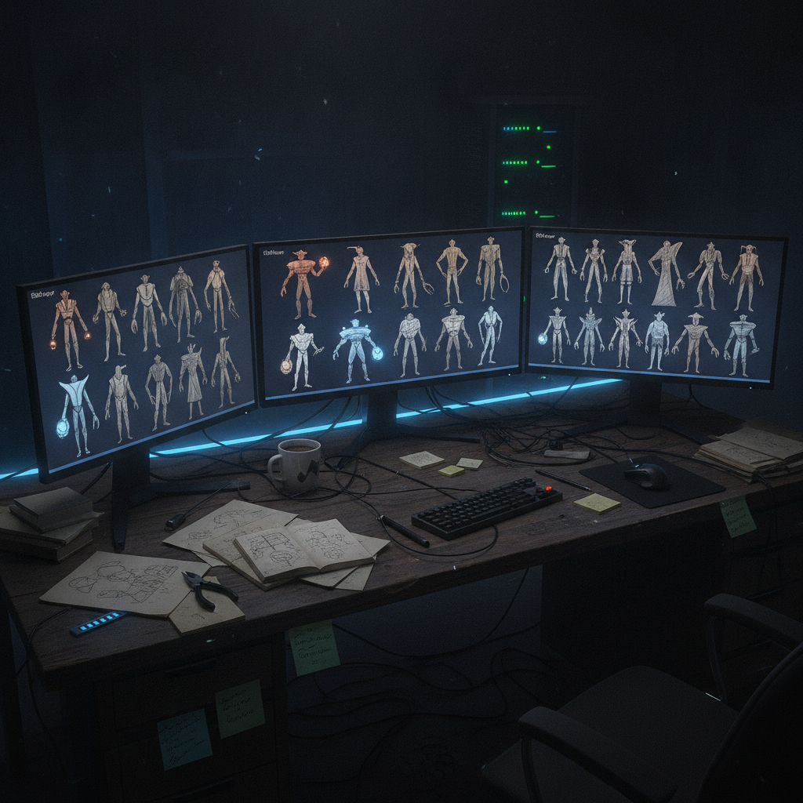

What the "God Loves BEPE" NFT Collection Means for Chia Builders
I stopped on this bookmark from @icelabs0 because it highlights a fun, community-driven approach to NFTs on the Chia blockchain. It is a reminder that even in serious tech, there is room for memes and creative expression that builds engagement.
What was bookmarked
The post from @icelabs0 announced the launch of the "God Loves BEPE" NFT collection. This collection, available on Mintgarden, is presented as an homage to a familiar classic, reinterpreted through the lens of love, memes, and community specifically for the Chia ecosystem. The creators emphasize that each BEPE is uniquely generated with hand-crafted traits. The post linked directly to the Mintgarden collection page.

Why it matters
This project is interesting not just for its playful theme, but for what it represents within the broader Chia landscape. It is another example of creators leveraging Chia's NFT capabilities for community building and digital art. For builders, it shows practical application of the NFT standard, demonstrating how unique digital assets can be launched and managed on the network. While many focus on the technical infrastructure of Chia, projects like "God Loves BEPE" illustrate the cultural layer emerging, where memes and community sentiment drive value and participation. It is a signal that the ecosystem is maturing to support diverse creative endeavors, moving beyond just proof of space and time.
The practical breakdown
- What it does: "God Loves BEPE" offers a collection of generative NFTs with unique visual traits, aiming to foster a sense of community around its theme.
- Who it helps: It provides a creative outlet for artists and developers building on Chia, and offers a unique digital collectible for community members interested in the intersection of meme culture and blockchain.
- Why builders should care: This project is a working example of deploying generative art NFTs on Chia using platforms like Mintgarden. It demonstrates how to leverage existing tools and infrastructure to bring creative projects to life. Understanding the mechanics behind such launches can inform future development for other decentralized applications or digital asset initiatives.
- What problem it solves: It addresses the need for engaging, community-centric content within the Chia ecosystem, providing a fun entry point for new users and a reason for existing users to explore the NFT space.
- What I would test first: I would look into the specific smart contract implementation or collection details on Mintgarden to understand the trait generation mechanism and any unique features beyond typical generative NFTs.
- Where this could go next: Projects like this can evolve into more interactive community experiences, integrate with gaming, or serve as governance tokens for specific sub-communities within Chia.
Rick's take
I am interested in this because it shows how open, decentralized platforms naturally attract a mix of serious infrastructure work and playful, meme-driven community projects. It is a good reminder that technology is built by and for people, and sometimes that means embracing the fun, quirky side of things. For me, the useful part is seeing the Chia NFT infrastructure put to work in a way that builds a distinct community, not just another generic collection. It is about culture as much as code.
What to watch next
Keep an eye on how these community-driven NFT projects on Chia evolve. Will they lead to new forms of engagement, decentralized autonomous organizations, or unique cross-platform integrations? The growth of creative projects often foreshadows broader adoption and innovation in an ecosystem.
Source and links section
Source: X post by @icelabs0, https://x.com/i/web/status/2074489604225282175, Retrieved on 2026-07-07. External references: Mintgarden Collection: https://mintgarden.io/collections/god--loves-bepe-col10xkqv3vdqu6z870q7jp4526qynmp57a622cz38jv5wss2zxamwtsga0tdc